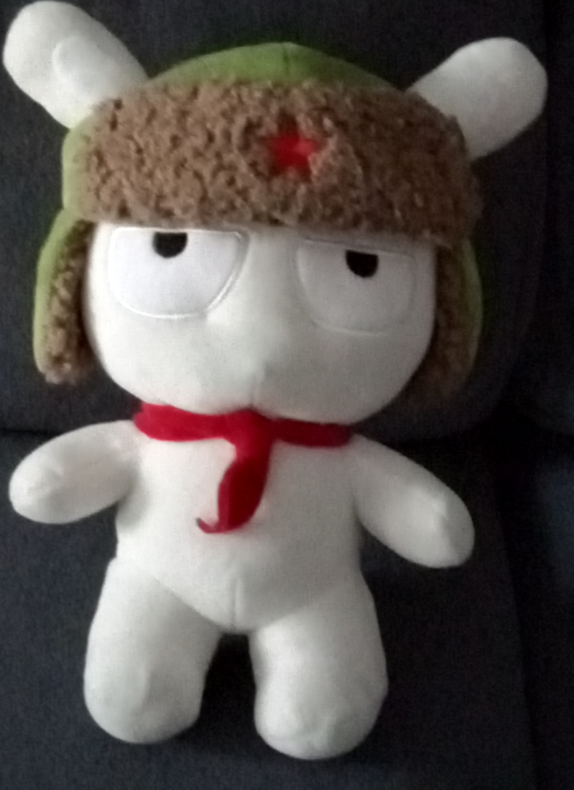

Автор: Ба*н Денис.
Нажмите сюда, чтобы почитать отличные комиксы. Нажмите сюда, чтобы поиграть в виселицу! Нажмите сюда, чтобы послушать музыку!🎶 Нажмите сюда, чтобы подписатся на меня в Facebok!!! Нажмите сюда, чтобы подписатся на меня в VK!!! ⬇Для начинающих о Xiaomi⬇ Xiaomi Corporation (кит. 小米科技, пиньинь: Xiǎomĭ Kējì, палл.: Cяоми́ Кэцзи́) — китайская компания, основанная Лэй Цзюнем в 2010 году, занимает шестое место в мире и четвёртое в Китае по объёму производства (продаж) смартфонов.16 августа 2010 года Xiaomi официально запустила прошивку MIUI, основанную на системе Android и совмещающую стили Samsung TouchWiz и Apple iOS.
Первый смартфон — Mi 1 был анонсирован в августе 2011 года. Он поставлялся в двух версиях — с прошивкой MIUI и с «чистым» Android. В августе 2012 года компания представила смартфон Mi 2, к сентябрю 2013 года было продано более 10 миллионов устройств.
5 сентября 2013 CEO Лэй Цзюнь объявил о планах запуска 3D-телевизора под управлением Android с диагональю 47 дюймов, который будет собираться на заводе корпорации Wistron на Тайване.
В сентябре 2013 года Xiaomi анонсировала смартфон Mi 3. 25 сентября 2013 года было объявлено о планах открыть первый флагманский магазин в Пекине. В октябре 2013 Xiaomi стала пятым мобильным брендом в Китае.
Символ Xiaomi — заяц в шапке-ушанке с красной звёздочкой и с красным пионерским галстуком на шее.
В 2014 году Xiaomi впервые сообщила о международной экспансии в связи с открытием первого магазина в Сингапуре. Были озвучены планы компании выйти на рынки Малайзии и Индии. 17 марта 2014 года был анонсирован Redmi Note (также известный как HongMi Note). Redmi Note был оснащён 5,5-дюймовым HD IPS-дисплеем с технологией OGS и восьмиядерным процессором от MediaTek.
В апреле 2014 года компанией было объявлено о начале расширения на международные рынки десяти стран, включая Россию. Ответственным был назначен один из бывших сотрудников Google Хьюго Барра.
В июне 2015 года Xiaomi подписала контракт с российской компанией «Марвел-Дистрибуция» на поставку планшетов MiPad. 18 июня 2015 года планшеты Xiaomi MiPad официально стали продавать в розничной сети «Связной». По итогам 2016 года компания не попала в первую десятку по количеству проданных устройств и выручке от их реализации. Однако в первом квартале 2017 года, по оценке ритейлера «Связной», Xiaomi оказалась в топ-10 российских компаний по объёму выручки.
В октябре 2016 года открыт первый официальный монобрендовый магазин Xiaomi в Моcкве.
Лэй Цзунь назвал цели компании на 2017 год, среди которых четырёхкратное увеличение числа физических магазинов, до 200 торговых точек, расширение присутствия Xiaomi в мире, углубление исследований в области искусственного интеллекта и финансовых онлайн-услуг.
В 2017 году компания официально представила на российском рынке ряд смартфонов и «умных» устройств, включая полноэкранный концепт-флагман Mi MIX, смартфон-фаблет Mi Max 2, смартфон Mi A1 на операционной системе Android One и др.
По результатам 3 квартала 2017 года Xiaomi заняла третье место на рынке смартфонов в России (по ввозу в страну).
С 14 декабря 2017 года смартфон Redmi 5A официально продается через российское подразделение Tmall (AliExpress). На официальную и сертифицированную продукцию распространяется гарантия бренда.
В феврале 2018 года компания представила в России лимитированную серию флагманского смартфона Mi MIX 2 Special Edition в цельнокерамическом корпусе и белом цвете. В марте в стране начали продаваться доступные полноэкранные модели Redmi 5 и Redmi 5 Plus, а в мае — Redmi Note 5.
В марте 2018 года Xiaomi впервые поднялась на первое место в России по продажам в интернет-магазинах.
На протяжении 2017—2018 годов продолжается активный рост сети официальных авторизованных розничных магазинов Mi Stores в городах России. В мае 2018 года был открыт 60-й магазин сети.
Деятельность компании началась с разработки Android-прошивки MIUI.
В 2011 году был выпущен собственный телефон компании — первое устройство с изначально предустановленным MIUI, конкурентоспособными техническими характеристиками и невысокой ценой.
В 2012 году выпущен второй смартфон, с более высокими характеристиками, а также вышла улучшенная версия Mi1 Plus.
Xiaomi Mi3 был представлен в сентябре 2013 года. Также был представлен первый телевизор этой компании — Xiaomi MiTV.
По результатам первого квартала 2014 года, компания заняла 3 место по объёму продаж смартфонов на рынке Китая (11 %), обогнав Apple (10 %). В мире компания занимает 6 место (3,8 %) и показывает устойчивый рост.
15 мая 2014 года Цзюнь на пресс-конференции представил два продукта: планшет MiPad и 4К-продолжение телевизора MiTV 2.
22 июля 2014 года в ходе проведения ежегодной конференции, компания объявила о следующем поколении смартфонов под названием Xiaomi Mi4, а также анонсировала выход шестой версии прошивки на базе ОС Android — MIUI. В ходе конференции был представлен первый «умный браслет» — Mi Band.
В третьем квартале 2014 года Xiaomi, по данным IHS iSuppli, впервые в своей истории вышла на третье место в мире по продажам смартфонов.
В 2015 году Xiaomi выпустила первую собственную экшн-камеру Yi, которая объявляется конкурентом GoPro. Также в 2015 году были представлены смартфоны Xiaomi Redmi Note, Mi Note, Mi Note Pro, Redmi Note 2, Redmi Note 3, Redmi 2 и Mi4C. Из аксессуаров стоит выделить тестер воды и маленькую Bluetooth-колонку Xiaomi MiFa.
В феврале 2016 года был представлен флагманский смартфон Xiaomi Mi5.
В марте 2016 года был представлен первый «умный» велосипед компании: Xiaomi QiCycle R1.
На официальном представлении 27 июля 2016 года китайская компания представила первый ноутбук под своей маркой — Xiaomi Mi Notebook Air, его цена составляет около 750 долларов США.
На этом же мероприятии был представлен новый смартфон — Xiaomi Redmi Pro.
5 Сентября 2017 года был представлен первый смартфон под названием Xiaomi Mi A1 в рамках программы Android One от компании Google, в котором не используется фирменная оболочка MIUI — на устройстве установлен «чистый» выпуск оригинальной сборки OS Android от Google (включая полный развернутый пакет экосистемы оригинальных сервисов Google). Данное устройство рекомендовано как эталонная тестовая платформа для разработчиков приложений для устройств на базе OS Android. Xiaomi Mi A1 полностью аппаратно идентичен с мобильным телефоном Xiaomi Mi 5X c системной оболочкой MIUI. (При желании опытный пользователь может самостоятельно установить прошивку с оболочкой MIUI для Xiaomi Mi 5X на свой Xiaomi Mi A1, и соответственно на Xiaomi Mi 5X можно установить «чистую» оригинальную сборку OS Android от Google от смартфона Xiaomi Mi A1…)
11 сентября 2017 года компания представила новый безрамочный смартфон Xiaomi Mi Mix 2 с дисплеем диагональю 5,99 дюйма.
25 октября 2018 года Xiaomi анонсировала свой первый смартфон-слайдер Mi Mix 3 с выдвижной камерой и 10 ГБ ОЗУ.
Выручка компании в 2018 году составила 26 млрд долларов.
10 января 2019 года Xiaomi представила первый смартфон Redmi Note 7 с 48-мегапиксельной основной камерой и процессором 2017 года выпуска Snapdragon SDM660. 18 марта 2019 Xiaomi официально анонсировала новый смартфон Xiaomi Redmi 7, стоимостью по набору функций (современный восьмиядерный процессор, большой IPS-экран под защитным стеклом Gorilla Glass и двойной модуль камеры с датчиком глубины сцены для размытия заднего фона) значительно дешевле своих основных конкурентов. В марте 2019 компания представила новую многофункциональную реверсивную отвертку Mijia Wiha 8-in-1 Ratcheting Screwdriver. 23 апреля 2019 года компания презентовала новую беговую дорожку Xiaomi WalkingPad.
24 сентября 2019 года Xiaomi представила первый в мире смартфон с изогнутым дисплеем, который охватывает практически все устройство — Mi Mix Alpha.
23 октября 2019 года компания выпустила умное одеяло, которое подстраивается под температуру тела.
Нажмите эту ссылку что бы посмотреть топ-10 смартфонов Xiaomi по Antutu.
Нажми меня, чтобы увидеть топ 5 планшетов Xiaomi по баллам Antutu. Цены представлены сервисом https://www.kimovil.com/